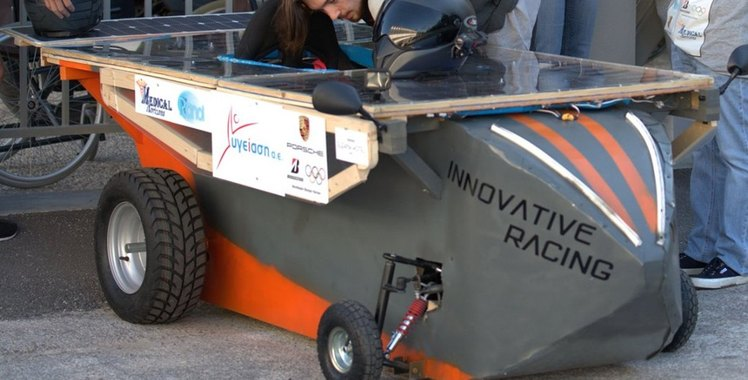
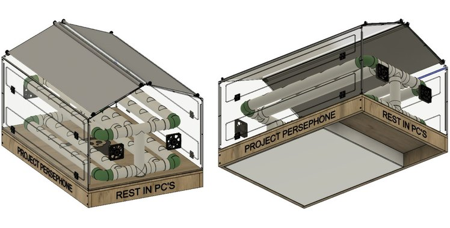

Index / Projects
Project index.
Team programmes and selected engineering case studies.
Prometheus Eco Racing — NTUA
Head of Mechanical Engineering
Prometheus Eco Racing
NTUA's Shell Eco-marathon team, competing in the Battery Electric Urban Concept class. Head of Mechanical Engineering since September 2025, leading mechanical development of PYRFOROS IV across nine subsystems, with steering and transmission shared — 7th in the Urban Concept Battery-Electric category, and Vehicle Design Award winner, at Shell Eco-marathon Europe 2026.
View team page →
Concept & Architecture
A point-mass lap-simulation energy budget, 48% drag and 26% mass, run before the detailed geometry was defined — the enclosed-wheel packaging decision and the four architecture changes it produced.
Case study →
Monocoque & Composites
A load-bearing CFRP sandwich shell at 2.1 mm average thickness — RVE-homogenised laminate, four regional ply stacks, five load cases at Tsai–Wu RF ≥ 1.0.
Case study →
Aerodynamics & CFD
Cd 0.111 (CFD) on a 0.882 m² frontal area — a component drag audit putting 40.35% on the wheel enclosures, lift logged as a cost, and what the solver report does not state.
Case study →
Suspension & Steering
Double-wishbone front and trailing-arm rear where the last car was rigid — dampers characterised across five settings on a shock dynamometer, near-ideal Ackermann steering, and 30 individually replaceable parts.
Case study →
Motor & Drivetrain — Mechanical Design
Mechanical design of the in-house drive motor and its 6:1 belt drivetrain — lap-simulation-sized, −20 kg powertrain mass vs. the prior generation.
Case study →TUCer — Technical University of Crete
Team Manager & Lead Mechanical Engineer
TUCer Team
Urban Concept Hydrogen prototype for the Shell Eco-marathon. Three roles between 2019 and 2025 — ergonomics & 3D manufacturing, analysis & design, then team leadership — from a 6th-place finish at Nogaro 2023 through to the final SEM 2025 campaign.
View team page →
CFRP Composite Wheel
Single-piece tubeless carbon-fibre wheel — RVE/FEA-validated to Tsai–Wu RF 1.54, -19.2% assembly mass. Best Thesis Award.
Case study →
Wheel Test Bench
Custom instrumented rig with Arduino PID firmware — measured -44%/-59% Wh/km and lower rotational inertia for the new wheel.
Case study →
Composite Curing Oven
Simulink-modelled curing oven, built and used for the wheel's real cure cycles.
Case study →
Metal AM Motor Mount
A 316L printed mount that arrived 12.7× outside tolerance — 3D-scan diagnosis in GOM Inspect, and the specification checklist it produced.
Case study →
Transmission System Redesign
Generative-designed motor mount and driven gear fixing a mesh-misalignment wear problem — -56% gear mass, -91% mount displacement.
Case study →Bodyshell Analysis
Structural analysis of the existing bodyshell, feeding directly into the attach/detach system redesign.

Bodyshell Attach/Detach System
New attach/detach mechanism for the bodyshell, designed from the bodyshell analysis findings.

Brake Pedal Assembly
New brake pedal assembly design.

Steering Wheel — Ergonomic Redesign (v2)
Second iteration of the ergonomic steering wheel, refining the 2019–2020 design.
Door Handle Mechanism
New door handle mechanism — design and implementation.

Steering Wheel — Ergonomic Redesign (v1)
Ergonomic design and structural FEA for a new steering wheel — the first of two iterations.
3D-Printed Driver's Seat
Full design, 3D-print manufacturing, and testing loop for a new driver's seat.
Bodyshell Lighting Concept
Forward-looking concept design for future bodyshell lighting systems — not built or tested.
Individual projects

Solar Racing Car
Coordinator and mechanical designer on a five-person school team — pine-frame chassis, €3,700 budget, a school race win in July 2019, and a later planetary-gearbox design study in 2020.
Case study →
Hydroponic Farm Robot
“Project Persephone” — a sensor-controlled hydroponic system with a structurally analysed greenhouse, 1st place WRO Hellas, 4th place at WRO 2018 Thailand.
Case study →EBEC / CBEC Competitions
Three results across BEST's engineering-competition series, including an autonomous firefighting prototype, BEST Chania 2025.
Case study →